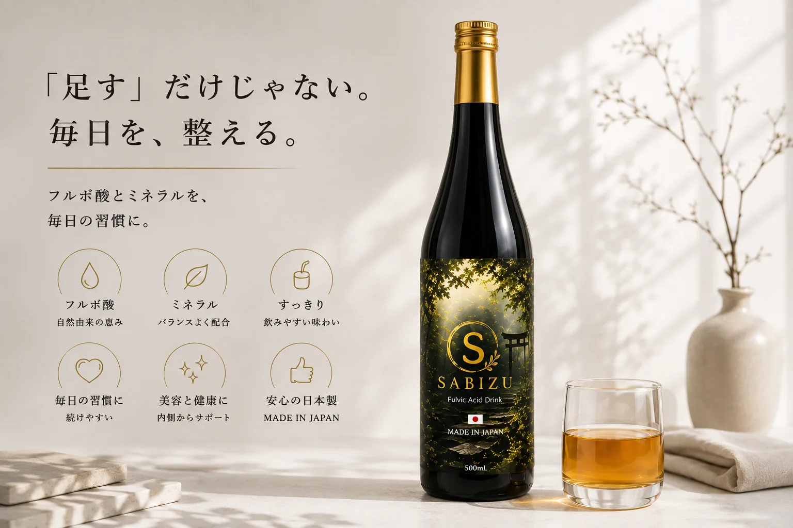
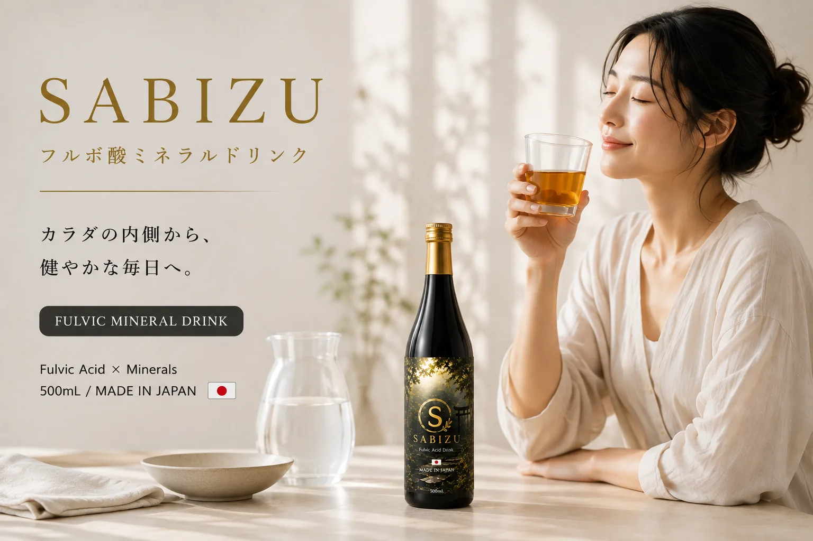

SABIZU
MADE IN JAPAN

毎日の美容習慣にプラスする、プレミアムインナーケアドリンク
キレイな人は、“内側”のケアも忘れない。
国産の海洋性腐植土から抽出したフルボ酸エキスを使用し、鉄・カルシウム・マグネシウムなどのミネラルも含有。外側からのお手入れだけではなく、内側からの美容習慣を始めたい方に。
- フルボ酸エキス配合
- 4種のミネラル含有
- 保存料・着色料不使用
- 日本製
- 通常価格（定価）
- 13,000円
- クラファン特別価格
- 1本 10,000円〜
- お届け予定
- プロジェクト終了後、10月末〜11月初旬
クラウドファンディングでの先行販売を予定しています。期間終了後は定価13,000円での販売となります。
こんな方の、毎日の習慣に。
- 外側のお手入れだけでなく、内側からの習慣も始めたい
- 忙しくても続けられるインナーケアを探している
- 錠剤のサプリメントが苦手で、飲みものでとりたい
- 毎日口にするものだから、原材料と製造国が気になる
※本商品は食品です。疾病の診断・治療・予防を目的としたものではなく、特定の効果・効能を保証するものではありません。
SABIZUとは
SABIZU（サビズ）キレート酵素とは、株式会社Wolfが取り扱う、国産の海洋性腐植土から抽出したフルボ酸エキスを使用したインナーケアドリンクである。
フルボ酸エキス配合
国産の海洋性腐植土から抽出したフルボ酸エキス（海洋性腐植土抽出液）を使用しています。
豊富なミネラル
鉄・カルシウム・マグネシウム・亜鉛など、美容と健康を意識する方にうれしいミネラルを含有しています。
すっきり飲みやすい
毎日続けやすい、すっきりとした飲みやすいドリンクタイプです。
保存料・着色料不使用
保存料・着色料は使用していません。
安心の日本製
国内で製造しています（MADE IN JAPAN）。
含有ミネラル
※100mlあたり

Evidence
主成分「フルボ酸」の研究紹介
SABIZUの主成分であるフルボ酸（Fulvic Acid）は、ミネラルと結びついて運ぶキレート作用や抗酸化作用を持つことから、近年、美容や皮膚科学の分野で世界的に研究が進められている成分です。
ここでは、成分「フルボ酸」について国内外の学術誌に掲載された研究報告を、掲載誌・巻号ページまでの出典とあわせてご紹介します。多くは試験管内・動物を対象とした研究で、ヒトを対象とした試験はまだ限られています。
※いずれも成分「フルボ酸」について論文等で報告のある作用の名称であり、本商品の効果を示すものではありません。
以下は成分「フルボ酸」に関する研究報告のご紹介であり、本商品（食品）の効果・効能を示すものではありません。
肌への働き（外用）に関する研究報告
湿疹への外用に関する臨床試験（ヒト・二重盲検）
- 南アフリカの研究チーム（Gandy et al.）による、湿疹のある36名を対象とした無作為化・二重盲検・プラセボ対照の試験です。フルボ酸を人に使った数少ない比較試験のひとつとして、この分野でよく引用されています。
- 炭水化物由来フルボ酸（CHD-FA）配合の外用剤を1日2回・4週間使用したところ、医師による全般改善度の評価で、プラセボ（偽薬）群と比較して有意な改善が報告されました。
- 安全性の検査値はいずれも基準範囲内で、塗布時の一過性のヒリつきを除き、プラセボ群との差は報告されていません。
抗炎症・創傷治癒（傷の回復）に関する動物試験
- ラットを用いた試験で、カラギーナンによって起こした炎症（腫れ）が抑えられたことが報告されています。
- あわせて、皮膚の傷の治癒が促進されたことが報告されています。
- 動物を対象とした試験であり、ヒトでの効果を示すものではありません。
抗菌・抗真菌作用に関する試験管内（in vitro）研究
- カンジダ菌（Candida albicans）に対して、浮遊状態でもバイオフィルム状態でも殺菌的に働き、その仕組みとして細胞膜への作用が示されました。
- 別の研究では、メチシリン耐性黄色ブドウ球菌（MRSA）や緑膿菌など薬剤耐性菌に対する抗菌活性も報告されています（Journal of Trauma and Acute Care Surgery 2015年 79巻 S121-S129ページ）。
- いずれも試験管内および動物を対象とした研究です。
アトピー性皮膚炎の分子メカニズム解析（培養細胞・マウス）
- 比較的新しい研究で、ヒト表皮細胞（HaCaT）において、かゆみ・炎症に関わる物質（CCL17／CCL22）の産生が抑えられることが報告されました。
- その仕組みとして、炎症を伝えるシグナル経路（p38 MAPK・JNK）の活性化を抑えることが示されています。
- アトピー性皮膚炎モデルのマウスにフルボ酸を塗布した試験でも、症状と血中のCCL17／CCL22が低下したと報告されています。
エイジングケア・「飲むこと」に関する研究報告
シワ・たるみ予防（コラーゲン分解の抑制）に関する研究
- 紫外線（UV）を浴びると皮膚の中で増える酵素「MMP（マトリックスメタロプロテアーゼ）」は、コラーゲンを分解してシワやたるみの原因になるとされています。
- 培養した線維芽細胞を用いた試験で、フルボ酸がこのコラーゲン分解酵素（MMP）の働きを抑えることが報告されました。
- あわせて、コラーゲンを生み出す線維芽細胞の生存率を高めたことも報告されています。
経口摂取（飲用）の安全性を調べた第1相試験（ヒト）
- アトピー素因のある男性30名に、炭水化物由来フルボ酸（CHD-FA）を段階的に増量しながら飲用してもらい、急性・亜急性の安全性を確認した試験です。
- 重篤な有害事象は報告されず、飲用時の忍容性が確認されたとされています。
- 試験用のCHD-FA溶液を用いた研究であり、本商品を用いた試験ではありません。
「飲むこと」と酸化ストレス・腸内環境に関する総説
- フルボ酸の免疫調節・酸化ストレス・腸内環境（マイクロバイオーム）への働きについて、それまでの研究を整理した総説です。
- 酸化ストレス（活性酸素種＝ROSと抗酸化のバランスの乱れ）が慢性の炎症と関わることを整理したうえで、フルボ酸の抗酸化作用や、腸内細菌叢・栄養吸収への影響に関する報告を紹介しています。
- 著者ら自身が「これまでの研究は限られており、さらなる検証が必要」と述べている総説であり、その位置づけのままご紹介しています。
成分を運ぶ「キャリア」機能・製剤への応用研究
- 医薬品の添加剤（賦形剤）としてフルボ酸を使えるかどうかを、規制要件に沿って検討した研究です。
- 水に溶けにくい成分の溶解性・吸収性を高める働きや、ほかの成分と結晶を作る性質が報告されており、成分を掴んで運ぶ「運び屋（キャリア）」としての機能が注目されています。
- このほか、フルボ酸そのものを有効成分とする経皮吸収パッチの研究も報告されています（Journal of Drug Delivery and Therapeutics 2024年ほか）。
研究報告から見えてくること
フルボ酸の4つの側面（守る・育てる・届ける・整える）
守る
慶應義塾大学などの研究では、紫外線によるコラーゲン分解酵素（MMP）の働きを阻害することが報告されています。
育てる
経口摂取と体内の酸化ストレス・腸内環境の関わりが研究されており（Journal of Diabetes Research 2018の総説ほか）、内側からのケアという考え方の背景として注目されています。ヒトを対象とした検証はまだ限られています。
届ける
分子量が小さく、ミネラルなどの成分と結びついて運ぶキレート作用により、成分の「運び屋（キャリア）」としての機能が研究されています。
整える
フルボ酸は弱酸性の性質を持ち、肌のpHバランス（酸性マントル）やバリア機能との関わりが研究されています。
「飲む」と「塗る」、2つの経路で進む研究
フルボ酸の研究は、経口摂取（飲む）と外用（塗る）の両面から進められています。
Inward — 飲む（経口摂取）の研究
経口摂取の研究では、腸内環境（マイクロバイオーム）や栄養吸収への影響、酸化ストレスとの関わりが報告されています（Journal of Diabetes Research 2018の総説）。ヒトを対象とした研究は、飲用の安全性を確認した第1相試験（Clinical Pharmacology: Advances and Applications 2012）などに限られ、検証はこれからの分野です。SABIZUは、この「飲む」タイプのインナーケアドリンクです。
Outward — 塗る（外用）の研究
外用の研究では、湿疹のある方を対象とした二重盲検試験での改善（Clinical, Cosmetic and Investigational Dermatology 2011）、かゆみ・炎症の原因物質（CCL17／CCL22）の産生抑制（Molecules 2023）、紫外線によるコラーゲン分解酵素（MMP）の阻害（西日本皮膚科 2012）が報告されています。
フルボ酸の品質について
フルボ酸は、採取源（土壌抽出か、植物発酵かなど）や抽出方法によって品質・純度が大きく異なることが知られています。論文では純度の高い医療グレードや特定の炭水化物由来フルボ酸（CHD-FA）が使われることが多く、製品を選ぶ際は抽出方法や純度の確認が重要とされています。SABIZUは、国産の海洋性腐植土から抽出したフルボ酸エキスを使用しています。
フルボ酸と「ONE HEALTH」
フルボ酸は、工場で作られる化学物質ではありません。命を全うした動植物や魚介類・海藻が腐葉土から腐植土へと変わる過程で、数千万年から1億年ともいわれる途方もない時間をかけて分解・発酵を繰り返して生まれた、「生命の循環の最終形態」とも呼ばれる天然由来の物質です。「豊かな海の背景には豊かな森が存在する」と言われるように、森から川、そして海へと流れ出て生態系をつなぐ、自然の仲介者の役割を担っています。
その働きが注目されているのは、ヒトの分野だけではありません。環境分野では水質浄化・土壌改良・重金属の吸着といった浄化剤としての利用が、畜産分野では家畜の栄養吸収サポートなどへの活用が研究されています。自然界では常に「不要なものを排出し、必要なものを届ける」仲介者として働いており、環境・動物・ヒトの健康をひとつながりのものとして捉える「ONE HEALTH（ワンヘルス）」の考え方を体現する物質として紹介されています。
真の美しさは、大自然との調和の中に。— Fulvic Acid, The Ultimate Cycle of Vitality.
※本セクションで紹介した研究は、成分「フルボ酸」一般に関するものであり、本商品を用いた試験結果ではありません。研究で使用されたフルボ酸の由来・純度・濃度・使用方法は本商品と異なる場合があります。本商品は食品であり、疾病の診断・治療・予防を目的としたものではありません。
先行販売価格
セットを選ぶ
クラウドファンディングでの先行販売を予定しています。期間中は、定価13,000円よりお得な以下の特別価格でご提供します。
クラファン特別価格・10,000円ポッキリ
- お支払いは、クレジットカード（Stripeの決済ページ）でお手続きいただけます。
- お届けは、クラウドファンディングのプロジェクト終了後、10月末〜11月初旬に順次発送予定です。
- クラウドファンディング限定価格のため、期間終了後は定価13,000円での販売となります。
- 開始通知のご希望、お見積もり・卸のご相談は、メール（info@wolf-g.jp）に「SABIZU購入希望」とご記載のうえご連絡ください。
よくあるご質問
フルボ酸とは？
太古の海洋植物やミネラルが長い年月をかけて自然発酵・分解された、天然由来の有機物質です。
ミネラルと結びつきやすい性質（キレート）があることで知られ、美容や健康を意識する方から注目されています。
価格はいくら？
定価は13,000円です。クラウドファンディング期間中は、1本10,000円（約23%オフ）から、まとめ買いで最大約42%オフになる特別価格を予定しています。詳しくは「セットを選ぶ」をご覧ください。
どこで購入できる？／支払い方法は？
すべてのセットを、このページの「セットを選ぶ」から、クレジットカード（Stripeの決済ページ）で直接ご購入いただけます。お見積もり・卸のご相談は、メール（info@wolf-g.jp）に「SABIZU購入希望」とご記載のうえご連絡ください。
いつ届く？
クラウドファンディングのプロジェクト終了後、10月末〜11月初旬に順次発送を予定しています。
毎日の美容習慣にプラスする、プレミアムインナーケアドリンク
キレイな人は、“内側”のケアも忘れない。
クラファン特別価格 1本10,000円〜
価格・セットを見る※本商品は食品です。疾病の診断・治療・予防を目的としたものではなく、特定の効果・効能を保証するものではありません。体調に不安のある方、通院中・服薬中の方は、医師にご相談のうえお召し上がりください。